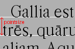

-
なぜフォントエディタを作るのですか? もう十分にフォントはあるのではないですか?
-
それは……違います。もしそうなら私はこのソフトを書いたりしませんでした。
-
ラテン文字のフォントはたくさんあります。それに比べて、ギリシャ文字・キリル文字・インド系文字・タイ語・中国語・日本語・韓国語・Unicode のフォントはずっと少ない…。
-
古い書字システムの研究者は、自分自身のフォントをデザインしなければならない場合がよくあります。
-
ラテン文字ですら、芸術や建築に新しいスタイルが生まれるごとにそれに伴う書体のスタイルが新しく作られてきた伝統があります。現代では、時代の美意識を反映するために常に新しいフォントが作られています。
-
コンピュータフォント技術は常に変化しています。10 年前に有用であったフォントフォーマットは現在役に立ちません。
-
あなたが既存のフォントに満足だったとしても、それが完全でない可能性はあります。
-
不足の合字
-
不足のアクセントつきグリフ
-
それに合うキリル文字又はギリシャ文字のグリフ
-
誰もが、自分自身の手書き文字をフォントにしたいと思います。
-
フォントで遊ぶのはとても楽しい。
FontForge は単にフォントを作成・編集するだけではない用途にも使えます。あるフォーマットから他のフォーマットに変換することができます。フォントファイルから情報を取り出すこともできます。または、フォントをインストールしないで、それがどのように見えるかを表示するだけのために使うこともできます。
-
私はなぜそれを書いたのか?
-
-
それが楽しいから。
-
MacroMedia が Fontgrapher の開発をやめてしまったから。それと、Fontgrapher には、私が欲しかった機能がなかったから。
-
なぜ私はそれを人にあげてしまうことにしたか?
-
-
私はフリーソフトウェアに賛成していて、良い製品が良いオペレーティングシステム上で得られることにより、人々が商用のオペレーティングシステムを使わないことを奨励するから。
-
プログラミングはマーケティングよりもずっと楽しいし、人にあげてしまう方が売るよりも簡単だから。
-
これを売ることにすると、品質保証のために大量の時間を使わなければならないから。
-
なぜ FontForge は非標準のウィジェットセットをベースにしているのか?
-
私は、Unicode を適度にうまく扱えるウィジェットセットが欲しかったのです。とくに、私は双方向テキストがヘブライ語とアラビア語のタイポグラフィにとって重要であると考えたからです。それを行えるウィジェットセットを知らなかったので、自分で書きました。
それと、私はチェックボックスがチェックされているかチェックされていないかが本当に見分けられるウィジェットセットが欲しかったのです。私の目にはどっちがどっちだか区別のつかない場合が多すぎたもので…。
-
なぜ FontForge は C++ で書かれていないのか (または なぜ C++ が私のお気に入りの言語でないのか)?
-
私がこの質問を受けたときはちょっと驚きました。自分の言語の選択を弁明しなければならないとは知らなかったもので。でもそうらしい……。
基本的に、私はオブジェクト指向を実践することがほとんどの場合に役立たずであると考えているからで、なぜなら、私は C++ があまりに複雑で悪いデザインであると考えているうえに、私はそれを簡単にデバッグできないからです。
-
私は SIMULA で育ち、SmallTalk をかじったことがある人間ですが、何年かの経験の後に、オブジェクト指向アプローチが私にとって自然に感じるような問題は非常に少ないことを悟りました。ほとんどの場合、それは単に不要な複雑さを解くべき問題に持ち込んでいるだけのように見えたのです。
-
C++ プログラムのセマンティクスは仕様化することが不可能です。コンパイラは、必要だと判断したときに思いのままにテンポラリを生成することができますが、C++ ではテンポラリを作成すると、予期せぬ副作用を伴う可能性のあるコンストラクタとデストラクタの呼び出しを引き起こします。私はこれにはぞっとしますね。
-
外部コンストラクタの実行順序が指定されていません。これによって説明不可能なバグがたくさん発生するのを私は経験しました。
-
私は、C++ のデバッグが非常に難しいことに気づきました。1 個の文をステップ実行すると、予想しない手続き呼び出しがたくさん発生することがしばしばです (それらの一部は、自明ではインライン関数です)。これにより、デバッグの元来の目的から気が散らされます。
-
もう一つ言えば、言語の仕様化がへたくそで複雑すぎると思います。その各種の概念は相互にうまく整合していません。各コンパイラはそれぞれ異なる形で処理を行っているような気がします。
私は 1981 年頃に、当時“C with Classes”と呼ばれていた C++ に出会いました。私は 1987 年から 1994 年にかけて、Green Hills Software のコンパイラスイートのために C++ フロントエンドを書き、バージョン 1.1 から ANSI までのそれぞれの新バージョンを追跡してきました。
どのバージョンにも、以前のものの上にうまく追加できない新機能がありました。どのバージョンも仕様は不完全でした。参照実装は仕様とはむちゃくちゃに違っていました。例えば、コンストラクタ内の仮想関数のふるまいは言語のバージョン 2 まで規定されておらず、その規定が素朴な解釈と異なっていたためにバグが発生しました。私のお気に入りの混乱は、(私の記憶が確かならば) バージョン 2.1 の仕様で、あるページの 2,3 段落の内に、以下の 2 つの文が飛び出したことです:“共用体はメンバ関数を含むことができる”と、“共用体はメンバ関数を含むことができない”。
上に書いたのは私の個人的な経験に基づいた個人的な意見で、なぜ私が C++ を使わないかの説明です。あなたの意見はこれとは違うでしょう、C++ コンパイラを書くのに 5 年間を費した人はほとんどいませんから。
-
フォントを改変することは合法ですか? 倫理上の問題はありませんか?
-
法律上の事柄は国ごとに様々です (恐らく国内でも違いがあります)。決定的な答えが知りたければ、弁護士に相談するべきです。ここに示すのはいくつかのガイドラインです:
あなたがフォントとともに入手した使用許諾を見て、この件に関してそれには何と書かれているかを見てください。
TrueType (および OpenType 並びに潜在的には CID キー指定フォント) には、OS/2 テーブル内に FSType と呼ばれるフィールドがあり、そこには他の人がこのフォントに対して何をすることができるかについてフォントデザイナーが制限を課すことができます。もしこのフィールドが変更を禁止している場合、FontForge は、あなたがフォントデザイナーからこのフィールドの制限を無視することの合意を得ているかどうかを尋ねます。
米国の法律についての私の理解するところは以下のとおりです (ただし、これに頼る前に弁護士のチェックを得てください):
-
フォントデザインに対する法的な保護は存在しない。それゆえ、米国内ではグリフ画像を合法にトレースすることができる。フォントデザイナーが現在生きている場合、これは明らかに倫理上の問題がある。
-
フォントプログラム (PostScript または TrueType のフォントファイルといったもの。ただしビットマップフォントファイルはこれに入らない) は著作権で保護可能である。
-
フォント名は商標権で保護することができる。
私の理解では、ほとんどのヨーロッパの国々では、フォントのデザイン (形) を複製することを禁ずる法律が存在します。
追加、または訂正があれば歓迎します。その他の国でフォントに関する規定のある法律についての情報も歓迎します。
-
12 ポイントのフォントとは何ですか? (ポイントサイズは、フォントのどこを計って決めるのですか?)
-

あるフォントが 12 ポイントの高さをもつのは、(ベタ組みの) テキストで隣接する 2 行のベースライン同士の間隔が 12 ポイントである時です。
ポイントサイズは、フォントのどのグリフのサイズにも基づいていません。
フォントが金属で作られていた時代に戻ると、フォントのポイントサイズは、そのフォントとともに用いられていた込物の高さと同じでした。
ある意味ではこれはフォントのサイズの計り方としてあまりいい方法ではありません (いくつかのフォントはアクセントまたはアセンダやディセンダに他のフォントより多くの空間を取っているため、実際のグリフの高さはより小さくなることになります)。
グリフの x ハイトに基づいた計測体系もあります。
英米ではポイントとは伝統的にパイカポイント (1 インチの 72.27 分の 1) のことでしたが、ヨーロッパではポイントはディドーポイント (1 インチの 67.54 分の 1) のことでした。ヨーロッパではわずかに大きなポイントを使用していますが、英国とヨーロッパのフォントは同じサイズであることが分かっています。ほとんどのヨーロッパの諸言語ではアクセントを使うのに対して、英語では (ごく稀な場合を除いて) アクセントを使用しないので、ポイントのサイズがわずかに増えたことによってアクセントのための空間がより多く取ることができます。
(もちろん、現在ではほとんどのヨーロッパ人はデスクトップソフトウェア上でパイカポイントを使うことを強いられており、ほとんどのコンピュータフォントは現在アクセントつきグリフを含んでいます。ですからこれらの区別とその必然性は消え去ったと言えるでしょう)。
-
フォントの行間はどうやって設定するのですか?
-
その方法は、出力しようとしているフォントの種類、使用しているオペレーティングシステムの種類、そして運によって異なります。
-
Type 1 フォントでは、行間を設定する方法はありません。たいていの場合、アプリケーションはフォントのバウンディングボックスで指定された値を行間の設定に用います。これは彼らの側にしてみればまったくひどい考えですが、広く実践されている方法です。
-
TrueType/OpenType フォントでは答えは非常に複雑です。
-
私のグリフはどのくらいの大きさになりますか?
-
残念ながら、この表面的には単純な質問には答えることができません。あなたのグリフはどんなサイズにもなることができます。アウトライングリフは拡大・縮小することができ、ビットマップグリフでさえもスクリーン解像度により異なったサイズとなります。
その代わりに、あなたが 12 ポイントで描画されるアウトラインフォントを持っているとしましょう。それならば我々は質問に答えることができます。
長さが 500 内部ユニットのダッシュのグリフがあり、そのフォントの em サイズが 1000 ユニットだとしましょう。そのばあい、あなたのグリフは 500/1000 * 12 = 6 ポイントの長さになります。72 dpi の画面では、そのダッシュは 6 ピクセルの長さになることになります。
em ユニットとは何か? (内部ユニットって?)
あなたがフォントを作成した時、エレメント(L)→フォント情報(F)...→[一般] でそのフォントの em サイズを指定することができます。これは、タイポグラフィ上の高さと深さの和です (金属活字の時代には、金属の塊の高さであり、ベースラインから次のベースラインまでの間隔でした)。一般に、em サイズは 1000〜2048 の値が使われます。この値が、長さ em を表現するのに用いられる内部ユニット (em ユニットとも呼ばれています) の個数を決定します。
FontForge の内部では、アウトライングリフはここで確定した座標系を使用して表示されます。概説の em ユニットに関するセクション も参照してください。
-
オープンソースのフォントに適したライセンスはどれですか?
-
多くのフォントがオープンソースのプログラムのために設計されたライセンスのどれかで公開されています——
Open Source Initiative による認定済みライセンスのリストをご覧ください——しかし、これらは一般的に、フォントデザイナーに固有の要望を満たしません。フォント専用に作成されたオープンソーススタイルのライセンスを私は 2 つ知っています:
-
システムの最小構成
-
これは、あなたが何をやりたいかに大きく依存します。FontForge にとっての最大の制約はメモリです (画面のピクセル数も制限になる可能性がありますが)
-
(ラテンアルファベットのような) たかだか数百個の単純なグリフを含む用字系にのみ興味があるならば、192MB で十分すぎるでしょう。
-
CJK フォントの本格的に編集を行うなら、512MB が使いものになる最低限の容量でしょう。
FontForge はカラー (またはグレイスケール) モニタを必要とします—白黒 2 色だけでは足りません。
-
なぜ FontForge はメモリをこんなに大量に食うのですか?
-
一般に、フォントは非常にコンパクトな表現で格納されます。各種のフォントフォーマットはファイルが小さく、ラスタライズしやすいように設計されています。編集を考慮に入れて設計されてはいません。
FontForge は、フォントの読み込み時により直観的で (私にとってですが) ずっと編集しやすいフォーマットに変換します。しかしそれによりサイズはずっと大きくなります。
FontForge がもっと効率的なメモリ表現を用いるように FontForge を書き直すことは不可能ではないでしょう。しかしそれには莫大な手間がかかり、私の興味を惹きません。
SFD ファイルが大きいのは、それと同じフォーマットを ASCII 表現にした物だからです。コンパクトであるようにではなく読みやすいように設計されているのです。
以下も参照: FontForge がメモリを使い尽くしてクラッシュしてばかりいます。何か対処方法はありますか?
-
自分が作ったフォントはどうやってインストールするのですか?
-
えーこれはあなたがどのシステムで作業中か、あなたが作ったのはどのタイプのフォントかに大きく依存します:
-
Unix 上の X (KDE を除く)
-
Linux フォント HOWTO ファイルを調べることを提案します。また、font deuglification HOWTO はよい出発点となるでしょう。しかし私も要点をざっと述べておきましょう。
本質を言えば、1 個 (または数個) のディレクトリを「フォントディレクトリ」に割り当てます。フォントをそのディレクトリに移動します。X が必要とするいくつかのデータ構造を構築し、あなたのフォントパスにこのディレクトリを組み込むように X に指示します。残念ながら異なるバージョンの X および X フォントサーバは微妙に異なる習慣を使用します。以下に挙げる手続きはあなたの所では多少変更する必要があるでしょう。
例えば、あなたが frabnuts-13.bdf という名前の BDF フォントをインストールしたい場合、以下のようにする必要があるでしょう:
$ mkdir my_fonts
$ mv frabnuts-13.bdf my_fonts
$ cd my_fonts
$ bdftopcf frabnuts-13.bdf >frabnuts-13.pcf
$ mkfontdir
$ xset fp+ `pwd`
こうすればあなたのフォントはインストールされたことになります。この後、あなたが X を起動するたびにあなたのフォントがどこにあるかを思い出さなければなりませんので、
$ xset fp+ /home/me/my_fonts
という記述を .xsession (または等価なファイル) に記述する必要があるでしょう。
PostScript フォントをインストールしたい場合
フォントは PostScript バイナリ (.pfb) ファイルとして出力するべきです。それから .pfb と .afm の両方のファイルをフォントディレクトリ (のどれか 1 つ) に移動し、そこで type1inst を実行してください。
type1inst はおそらく、あなたのフォントに鋳造所 (foundry) が含まれておらず、おそらくエンコーディングが間違っているだろうと文句を言うでしょう。以下のいずれかの方法が可能です:
-
無視する。悪い事は何も起こらないでしょう。
-
type1inst を実行した後で、これらの項目を修正するために fonts.scale を手で編集する。
-
フォントの Copyright を適切な値に設定し、それから type1inst を編集してあなたの製造所名を追加する (このやり方は、type1inst その物に書いてあります)。
TrueType フォントをインストールしたい場合
フォントディレクトリに .ttf ファイルを移動してから mkttfdir と mkfontdir を実行します。
(mkttfdir には、FontForge で作られたフォントの扱いに関する小さな問題があります。それは必ずと言っていいほど確実に製造元が認識できないと警告してきます。無視しても何ら問題はありませんが、それを煩わしく感じるならば ttmkfdir.c の 936 行目に以下の 1 行を追加してください。
{ "PFED", "FontForge"
},
いくつかのバージョンの X (例えば、redhat に同梱のもの) は、フォントの処理を X サーバそれ自身で行うのではなく、X フォントサーバに頼っています。chkfontpath を使用してフォントサーバのフォントパスに新しいディレクトリを追加する必要があるでしょう (xset fp ではなく)。
また、フォントディレクトリ (およびその上位ディレクトリ) は万人に対して読み出し可能でなければなりません (フォントサーバは非特権ユーザとして実行されます)
私は、X が OpenType をサポートしているという発言をまだ見たことがありませんが、FreeType はサポートしている (また、X のラスタライザは FreeType を使用しているはずである) ので、X はそれらもサポートすることができるでしょう。ただし、それをインストールするには fonts.scale を手で編集する必要があります (mkttf は、OTF ファイルをサポートしていない freetype1 を使用しています)。
この説明では訳が分からないでしょう。私は優秀な書き手ではないことと、X を設定する方法には多くの選択肢がありすぎることを言い訳しておきます……。
-
KDE
-
(私は KDE について深く知りませんので、私の経験については眉に唾をつけて読んでください) KDEでは、kfontinst と呼ばれるツールがあり、これが必要なすべての設定を行うものと考えられています。私はこれを動かすために root になる必要があり、私のシステムを以下の習慣に従うように再設定する必要がありましたが、いったん設定が終われば X へのフォントのインストールはごく簡単に行うことができました。私は、自分が ghostview フォントをどうやってインストールするかについてはまったく分かりませんでした (私が試したのは version 0.9.2 です)。
-
TeX
-
TeX は独自の (プラットホーム独立な) フォントインストール用のシステムを備えています。私は自分の経験した限りの事柄をこの文書の別の場所で説明しました。
-
Windows
-
TrueType フォントの Windows へのインストールは、そのマシンの \Windows\Fonts ディレクトリにフォントをドロップすることによって行います。フォントをインストールする前に、実行許可ビットを有効にする必要があるでしょう。
フォントを直接 \Windows\Fonts に出力しないでください。それではうまく動かないようです (少なくとも私の XP マシンでは)。フォントをいったん別のディレクトリに出力してから、\Windows\Fonts にドラッグ & ドロップしてください。
Type 1 フォントを使用したい場合は、Adobe Type Manager をインストールして、以下の手順に従う必要があるでしょう。
OpenType フォントを古いシステム (たしか、Windows 2000 よりも前だと思います) にインストールしたいときは、ATM をインストールする必要があります。最近のシステムでは OpenType は TrueType と同じように扱うことができます。
-
Macintosh OS 9
-
ったく…。Mac はフォントをリソースソースに張りつけ、独自のヘッダをつけて固めたデータ構造に納めています。Mac のフォントは他のどのシステムとも互換性がありません。FontForge は、フォントを MacBinary エンコーディングに固めたときはリソースフォークを作成することができます。より詳しい情報は以下の質問を参照してください。私は、あるフォーマットから別のフォーマットに変換するちょっとしたユーティリティも書いていて、それらは役に立つことが実証済みです。
一度フォントを変換してしまえば、それをシステムフォルダにドロップするだけで、その後すぐ使えるようになるでしょう。
-
Macintosh OS X
-
OS X では、フォントはトップレベルの Library/Fonts ディレクトリ (デフォルトでは
/Mac OS X/Library/Fonts/) に置くか、System/Library/Fonts ディレクトリか、またはそのユーザに一致する Fonts サブディレクトリ (~/Library/Fonts) に置くことができます。
リソースフォント (MacBinary ラッパから展開したもの) または dfont のどちらも使用できます。通常の TTF および OTF ファイル (つまり、Unix や MS Windows で使えるのと同じファイル) も使用できます。
私の言える限りでは、昔の NFNT ビットマップリソースは私の OS 10.2 では動きません。ビットマップを使いたい場合は、TTF ファイルまたは sfnt に固めてください。ただし、Type1 リソースフォントを使いたい場合は、(役に立たない) ビットマップフォントも一緒に生成し、それらを両方インストールする必要があります。
-
どうして FontForge で作ったフォントが MS Windows のシステムにインストールできないことがあるのですか?
-
フォントを直接 \windows\fonts ディレクトリに出力しないでください。フォントを別のディレクトリに出力して、その後に Windows のドラッグ & ドロップ操作で fonts ディレクトリに移動してください。
古いバージョンの FontForge が出力したフォントは Windos 2000 (および XP) システムにインストールできないと聞きました。
私は、これらの問題は (2003年10月20日現在) すでに解決済みであると信じています。それより古いバージョンをお使いの方はアップグレードをお願いします。
フォントを別のマシンからコピーしてきた場合、フォントファイルの実行ビットが設定されていることを確認してください (これを Windows の UI 上で行う方法を知りませんが、cygwin では $ chmod +x foo.ttf とすれば変更できます。)
-
マク用のフォントを編集するにはどうすればいいの?
-
-
Mac OS/9 (またはそれ以前)
-
伝統的に Macintosh はフォントをファイルのリソースフォークに格納してきました (OS/8.5 頃から後では、Mac は裸の .ttf ファイルのサポートも行っていると思います)。これは Mac 以外のすべてのマシンでは、リソースフォークの概念がまったく無いために、問題となります。
Macintosh の 1 個のファイル全体を他のシステムで扱える 1 個のパッケージに格納する目的のプログラムがいくつかあります (最もよく使われているのは MacBinary と BinHex です)。FontForge はこれら両方のフォーマットをどうやって読むかを知っており、それらのどちらからでも PostScript フォントや TrueType フォントを読み出すことができます。FontForge はフォントを MacBinary フォーマットで作成することもできます (両方の出力フォーマットのサポートが必要となる理由は見当たりませんし、MacBinary のほうが少し単純だったので)。
そういう訳で、Mac のフォントを編集する手順は以下のようになります:
-
System Folder:Fonts フォルダにあるファイルを見つける
-
ファイルを Unix マシンにコピーする
-
Fetch を使用し、MacBinary フォーマットを指定する。
-
または BinHex のような、ファイルを直接作成できるツールを使う
-
それを FontForge で開く
-
編集する
-
フォントを再び MacBinary フォーマットで保存する
-
それを Mac に返送する
-
Fetch は自動的に MacBinary ラッパを展開し、正しいファイルにします
-
またはその他各種のツールでも展開できます。
-
それを元のシステムフォルダにドロップする (それにより、自動的に Fonts に転送されます)
注意: 元のフォントファイルを別の場所に移すか、(PostScript フォント用の) フォント名を FontForge で書き換えたうえで新しいユニーク ID をつけておくことを忘れないでください (フォント情報ダイアログを参照してください)。
警告: PostScript フォントは、最低 1 個のビットマップフォントが付属していないと Mac では役に立ちません。PostScript フォントを出力するときには、NFNT (これは FOND を含んでいます) も一緒に出力する必要があります。
警告: Mac は、PostScript ファイルを格納しているファイルの名前にはうるさいのです。この名前は PostScript フォント名に基づいていますが、変換をかけたものです。このファイルの名前を変更しようと試みないでください。基本的なルールは以下の通りです (Adobe Technical Note 0091 を参照してください):
-
フォント名は、大文字で始まるいくつかの単位文字列に分解される。
-
最初の単位文字列には、大文字で書かれた先頭文字の次に 4 個の小文字を続けることができる。
-
残りの単位文字列には、大文字の後ろには小文字 2 文字しか続けることができない。
-
英字以外の文字 (少なくともハイフン) は取り除かれる。
これにより、TimesBold ⇒ TimesBol, Helvetica-BoldItalic ⇒ HelveBolIta, NCenturySchoolbook ⇒ NCenSch と変換される。
-
Mac OS X
-
Mac OS X では (XDarwin がインストールしてあれば) FontForge を直接起動することができます。OS X にはいくつかのフォントフォーマットがあり、いくつかのフォントは古いフォーマット (上記参照) で格納されており、一方そのたのものはデータフォークリソースとして格納されています。データフォークフォントファイルの拡張子は、ふつう“.dfont”です。Mac では、FontForge はどちらのフォーマットも直接編集できます。OS X は通常の .otf および .ttf 形式のフォントファイルもサポートしています。
Mac OS X は古い NFNT ビットマップフォーマットをサポートしていないようです。それでも未だに、リソースベースの PostScript を使用する際には NFNT フォーマットのビットマップフォントが含まれている必要があります (おそらく、実際に必要なのは NFNT リソースではなくてそれに付随する FOND リソースだと思いますが、裸の FOND リソースを出力する何らかのデータを書き出すようにする予定はありません——その他のも同様にありません)。
-
Mac のフォントファミリーはどうやって作るのですか? (フォントをグループ化して、イタリックやボールドのスタイル指定が動作する方法は?)
-
ほとんどすべての Mac アプリケーションの「書式」メニューであなたのフォントが動作するようにするには、フォントファミリーを作成しなければなりません。これを行うには、
ファイル(F)→Macファミリーを出力(F)... コマンドを使用します。
同じファミリーに含まれるフォントには、すべて同じファミリー名をつけなければなりません (フォント情報ダイアログを参照してください)。フォントファミリーは Carbon (OS 9 で使われていた古いフォント処理メカニズム) と、(OS X の) ATSUI とでは扱いがかなり異なります。
Carbon では、フォントファミリーが使えるのは、1980 年台前半のコンピュータフォント技術を反映している、Mac の“FOND”リソースに限られています。現代的なコンピュータフォントは、これでは表しきれない変種を含むことがしばしばあります。FOND は以下のスタイルの任意の組合せをサポートします (ただし Extend と Condense は同時に指定できません):
-
Bold
-
Italic
-
Condense
-
Extend
-
Underline
-
Shadow
-
Outline
Mac の FOND は“Black”,“DemiBold”,“Light”,“Thin”または“Extra-Condensed”のような変種をサポートしていません。
一方、ATSUI の下では、ファミリーは同じ FamilyName をもつ一定のリソースファイルに含まれるすべてのフォントから構成されているようです。
以下のスタイルをもつフォントのファミリーがあるものとする:
Regular, Bold, Italic, Bold-Italic, Condense, Condense-Italic, Oblique, Light,
Light-Italic, Black
その場合、FOND がサポートするスタイルを含んだフォントファミリーを作成するべきである。この場合は以下のようになるだろう:
Regular, Bold, Italic, Bold-Italic, Condense, Condense-Italic
これらのそれぞれに、エレメント(L)→フォント情報(F)...→[Mac] を用いて、フォントのファミリー名に使われる FOND 名を設定すること。
他のスタイルの FOND 名を別の名前に設定して、Oblique スタイルには FOND 名に“Oblique”が含まれるようにし、2 種類の Light スタイルには“Light”が含まれるようにする。フォントの“Light”版の変種を Mac スタイル で (何も選択されない状態にすることにより) Regular に設定し、“Light-Italic”の変種を“Italic”に編集する——これは、FOND が扱えない“Light”については忘れるということです。“Light”のついた物をそれ自体別のファミリーとして分類したのはそのためです。
この設定が終わったら、Macファミリーを出力(F)... コマンドを実行すれば、すべてのフォントを適切な FOND に格納し、すべての FOND を Mac が正しく解釈できるはずの 1 個のファイルに出力することができるでしょう。
-
なぜ自作のフォントが ATM でうまく使えないのですか?
-
フォントを出力する時には、それが Macintosh Latin エンコーディングを含んでいることを確認してください。
この制限事項は完全に ATM のせいであって、FontForge がこれに対して手出しできる事は何もありません。
もし、フォントを Macintosh Latin 以外のエンコーディングで出力した場合には、Mac のデフォルトの動作では、その PostScript フォントが Macintosh Latin 符号化方式を含んでいると強制的に解釈します。このふるまいを停止する機能が存在しますが、それを停止してしまうと ATM はまったく動かなくなるでしょう。
-
MS Windows でフォントを編集するにはどうすればよいですか?
-
MS Windows へのインストール手順 を参照してください。
-
私が作ったフォントが Windowsで使えないのはなぜですか?
-
ここに示すのは 1 つの可能性です: Windows は場合により (どんな場合かはよく分かりません)、適切な言語 (例えば、SJIS フォントでは日本語) の名前が name テーブルに含まれていることにこだわります。
エレメント(L)→フォント情報(F)...→[TTF名]を呼び出して、使用している言語の文字列を一式追加してみてください。
その他の可能性については ここで議論しました。
-
OTF または Type1 フォントを読み込んだ時、ほとんどすべての参照がインラインのコピーに置き換えられてしまいます。元の参照を復元するにはどうすればいいですか?
-
PostScript フォントを読み込んだときに、それにもとは参照が含まれていたのを認識するのは非常に困難です。その代わりに、FontForge にはフォント内に含まれる潜在的な参照の候補を検索してそれらを参照に置換する専用のコマンド
編集(E)→参照に置換 があります。
-
FontForge は元のカーニング情報をフォントから読み込みますか?
-
この質問はいくつかの場合に分けて答える必要があります:
-
TrueType および OpenType フォント
-
はい。カーニング情報は、これらの形式のフォントでは‘kern’または‘GPOS’テーブルに格納されており、FontForge はそれらを読み込むことができます (Apple はオリジナルの TrueType の仕様に数々の拡張を加えていますが、FontForge はそれらも読み込むことができます)。
-
Mac 以外のあらゆる環境での PostScript Type1 フォント
-
カーニング情報は Type1 フォントファイルには格納されません。その代わりに、ファイル名の本体が同じで拡張子が“.afm”になっているファイルの中に格納されます。FontForge が PostScript フォントを読み込むとき、それは付随する AFM ファイルをチェックし、もし見つかったならば、そのファイルからカーニング情報を読み込みます。
-
Mac 上での PostScript Type1 フォント
-
いいえ。この場合もカーニング情報はフォントファイルの中には格納されません (それは、ビットマップフォントファイルの中に格納されます) が、Mac 上では付随するビットマップの名前を推測することが不可能なため、FontForge は試そうともしません。
FOND からカーニング情報をどのようにして読み込むかについては、下記の情報を参照してください。
-
AFM および TFM ファイル
-
FontForge はカーニング情報をこれらのファイルから直接読み込み、それらのデータをフォントに対して適用することができます。
ファイル(F)→カーニング情報の統合(M)... メニューコマンドを参照してください。
-
FOND リソースを含む Mac リソースファイル
-
Mac はカーニング情報をビットマップフォントに伴う FOND リソースに格納します。これは PostScript フォントを含むファイルには格納されていません)。Mac の PostScript フォントにカーニングデータが必要な場合、PostScript フォントと同じファミリーとスタイルをもつビットマップフォントを含んだフォントファイルを見つけなければなりません。FontForge はカーニング情報を直接これらのファイルから読み込み、そのデータをフォントに適用することができます。
ファイル(F)→カーニング情報の統合(M)... メニューコマンドを参照してください。
-
あるアウトラインフォーマットから他の方式に変換するにはどうすればよいか?
-
これは簡単です。既存のフォントを開き、次に
エレメント(L)→フォントを出力(G)... コマンドを使って、欲しいファイル形式で出力してください。
-
あるビットマップフォーマットから他の方式に変換するにはどうすればよいか?
-
これも簡単です。ビットマップフォントを開き、次に
エレメント(L)→フォントを出力(G)... コマンドを使って、欲しいファイル形式で出力してください。
-
アウトラインフォーマットからビットマップフォーマットに変換するにはどうすればよいか?
-
アウトラインフォントを開いてください。次に
エレメント(L)→使用するビットマップ(A)... を使って、適切なサイズのビットマップを (必要なだけ) 生成してください。この処理はラスタ変換と呼ばれ、小さなサイズの場合計算機ではうまく行うのが困難です。ラスタ変換の結果をビットマップウィンドウ内で (ウィンドウ(W)→ビットマップウィンドウを開く(B)を使って) 確認すれば、おそらくビットマップを望み通りに修正する必要があるだろうとアドバイスしておきましょう。それが終ってからファイル(F)→フォントを出力(G)...を選択し、アウトラインフォントの出力をオフにして (もちろん、アウトラインフォントが必要な場合は別です)、必要なビットマップフォーマットを選んでください。
-
ビットマップフォーマットからアウトラインフォーマットに変換するにはどうすればよいか?
-
非常に大きなビットマップフォント (TeX フォントのような) を持っているのでなければ、以下の処理によって良好な出力結果は得られないでしょう。
-
何か処理を行う前に、potrace か autotrace プログラムがシステムにインストールされているか確認してください。
-
新しいフォントを作成します。
-
ファイル(F)→取り込み(I)...コマンドを使って、ビットマップフォントをこの新しいフォントに取り込みます。
-
[] 背景として使用 チェックボックスにチェックが入っているか確認してください。
-
編集(E)→選択(S)→すべて選択(A)
-
エレメント(L)→自動トレース(R)
-
エレメント(L)→極大点の追加(X)
-
エレメント(L)→単純化(S)
おそらくこの段階で、アウトライングリフを目で見て形を整える必要があるでしょう。
-
ファイル(F)→フォントを出力(G)...
-
Apple 高度組版機能 (AAT) から OpenType への変換方法
-
これらのフォーマットによって得られる結果の間には多数の類似性がありますが、完全に重なり合うわけではありません。ほとんどの場合、変換を行うと何らかの情報が失われるでしょう。
答えは単純で、まったく自動的に行われます。Apple 形式のフォントを読み込んでから フォントを出力(G)... を選択し、オプション ダイアログの [*] OpenType チェックボックスをチェックして、等価なフォントを出力します。
FontForge は、文脈非依存の機能が Apple の機能/設定と一致する OpenType 機能が存在するときには必ず変換を行います。(文脈非依存の合字は、文脈依存フォーマットに格納されている場合でも変換が行われます)。これに関するより詳しい情報については、相互変換のセクションを参照してください。
-
OT から AAT への変換方法
-
これもほとんど自動的に行われます。OpenType フォントを読み込んでから
フォントを出力(G)... を選択し、オプション ダイアログで [*] Apple をチェックします。
FontForge は、一部の文脈依存の OpenType テーブルを AAT に変換することができます。 Apple の機能/設定に一致する物がある文脈非依存の機能も変換対称となります。これに関するより詳しい情報は、相互変換のセクションを参照してください。
-
FontForge がヒント置換を行うようにするにはどうすればいいですか?
-
勝手に処理してくれます。
または、点を選択してから エレメント(L)→情報を得る(I)...→[ヒントマスク] を選択すれば、ヒントセットが変更される場所を制御することができます。
-
FontForge が flex ヒントを使うようにするにはどうすればいいですか?
-
勝手に処理してくれます。FontForge は flex ヒントを出力するのが適切な状況のときに出力を行います。あなたは何もする必要はありません。flex ヒントを使用するとき、必要なサブルーチンはフォントに追加されます。ヒントが不要な時は、サブルーチンは追加されません。
-
flex ヒントが使われるかどうかはどうすれば分かるのか?
-
FontForge が flex ヒントを使おうとしているかどうか確認したいときは、環境設定項目 UpdateFlex をオンにしてから当該グリフのグリフビューを開いてください。FontForge は、flex ヒントの中心点を緑色の丸で囲って示します。
-
どのグリフも完璧にヒントづけしたのに、幅が揃わない (またはぼやけて見えたり完全に掠れて見えなかったりする) ステムがあるのはなぜですか?
-
PostScript と TrueType のどちらも、グリフの輪郭は時計回りに描かなければなりません。あるラスタライザではどちらでも問題になりません。しかし別のラスタライザでは反時計回りのパスを描いたときに、正しい幅と異なる太さのステムや、ぼやけたステムを表示したり、全く何も表示しないことさえあります。これに対する解決策は、フォントを出力する前に、
エレメント(L)→アウトラインの向きを修正(C) を全ての文字に対して実行することです。
-
OS/2 テーブル (または別のどれか) の特定のビットをセットするにはどうすればいいですか?
-
FontForge はその機能はありませんが、私は mensis (ラテン語で「テーブルに(のために,によって,から)」の意味) というテーブルにビット単位のアクセスができる補助プログラムを書きました。これは UI とスクリプトアクセスの両方を提供しています。
-
フォントを等幅だと見せかけたいのですが、どうすればいいですか?
-
それはできません。フォント内の全てのグリフが同じ幅を持つようにすれば、FontForge はそれを等幅であると印づけます。(実際に等幅でないフォントを等幅と印づけると、一部のラスタライザでは結果がおかしくなります)。
もし自分でフォントの PANOSE 値を (エレメント(L)→フォント情報(F)...→[OS/2]→[Panose] で) 設定したいならば、幅の比率(P) フィールドを Monospaced に設定してください。これは、フォントを全体として等幅であると設定するために必要ですが、これだけでは十分ではありません。
フォントに含まれる全グリフが同じ送り幅を持っているかどうか自信がない場合は、エレメント(L)→問題点を発見(O)...→[ランダム]→送り幅をチェック: を使用してください。
“全グリフ”とここで言ったのは本当に全てのグリフのことです。Unicode の規格が幅 0 であると定めている文字ですら、その他全てと同じ幅でなければなりません。Microsoft は、アクセントの組合せ (等) を行うのに GPOS を使用し、任意のマーク (アクセント) の幅を 0 に変更することを提唱しています。
-
FontForge への新しいエンコーディングの追加はどうやるのですか?
-
本当に新しいエンコーディングが必要ですか? 自問してみてください。OpenType または TrueType フォントを使用しているなら、標準の Unicode エンコーディングで用が足りるはずです。しかし、もし本当に新しく追加する必要がある場合、必要な作業は大体こういう感じです:
似たようなエンコーディングを探す。しばしば、そのエンコーディングの雛形となるものを探して Web を検索して回る必要があります。例えば、デーヴァナーガリー文字のエンコーディングが必要なら、ISCII の各種エンコーディングを載せているサイトを参照するべきでしょう。
これらのエンコーディングは上半分の 96 文字のみを示しています。おそらく、他は US ASCII と同じでしょう。画像を見てそれらが Unicode にどのように対応づけられるか (または、より正確にやるならば、それらの文字の適切な PostScript 名はなにか) を調べてください。
ファイルを作成します (この例では“Devanagari.ps”と呼ぶことにします)。それはこのような行で始まるでしょう:
/Devanagari {
これは FontForge に、このエンコーディングが "Devanagari" という名前であることを指示しており、その後ろにはすべての文字の (スラッシュが頭についた) 名前のリストが続きます。最初は ASCII で、32 個の .notdef 文字から始まり、それから space 等の文字が続きます。
/Devanagari {
/.notdef
/.notdef
...
/.notdef
/space
/exclam
/quotedbl
...
/braceright
/asciitilde
/.notdef
...
/.notdef
/uni0901
/uni0902
...
/uni096F
}
ファイルを作成したら、FontForge のエンコーディングリストに エンコーディング(N)→エンコーディングを読み込み(L)... でこれを追加し、それからお好きなフォントにそれを適用してください。
-
新しい名前をつけたグリフの追加はどうやるのですか?
-
ここでは仮に、グリフ“dotlessi”を ISO 8859-1 のフォントに (これには dotlessi は含まれていません) を追加したいとしましょう。この問題へアプローチする方法は 2 つあります:
-
エンコーディング(N)→エンコーディングスロットを追加(A)... を呼び出す
追加したいグリフの個数 (おそらく 1) を入力する
[OK] を押す
フォントの最後までスクロールして新しいスロットを探す
そのグリフを選択する
エレメント(L)→グリフ情報(I) を呼び出す
新しい文字の名前を Unicode名(N) フィールドに入力する (この例では dotlessi と打つ)
名前で指定(A) ボタンを押す
[OK] を押す
これで、そのグリフに dotlessi をデザインすることができます。
-
エンコーディング(N)→エンコーディング変換(R)→ISO 10646-1 を呼び出す
表示(V)→移動(G) を呼び出す
dotlessi と打ち込む
[OK] を押す
ここで、選択されたグリフスロットにグリフ dotlessi を作成する
もう一度 エンコーディング(N)→エンコーディング変換(R) を呼び出す
エンコーディングを変更前の値に戻す
-
FontForge がいくつかのグリフに間違った名前をつけるのはなぜですか?
-
FontForge のグリフ命名規約は Adobe のグリフ命名規約で指定されている方法ですが、残念ながら、それにはいくつか問題があります (一般的に、古い符号化方式との互換性のためです)。私の知るかぎり以下の問題があります:
-
Delta
-
は U+0394,“GREEK CAPITAL LETTER DELTA”ではなく U+2206,“INCREMENT”に割り当てられています。おそらく、Increment が古い MacRoman エンコーディングに含まれているからでしょう。
-
Omega
-
は U+03A9,“GREEK CAPITAL LETTER OMEGA”ではなく U+2126,“OHM SIGN”に割り当てられています。
-
mu
-
は U+03BC,“GREEK SMALL LETTER MU”ではなく U+00B5,“MICRO SIGN”に割り当てられています。おそらく、マイクロ記号が ISO-Latin1 と MacRoman に含まれているからでしょう。
-
omega1
-
Unicode ではこれを“GREEK PI SYMBOL”と呼んでいます。omega に似た形をしてはいるのですが。
-
Tcommaaccent, tcommaaccent
-
は U+021A,U+021B“LATIN CAPITAL/SMALL LETTER T WITH COMMA BELOW”ではなく U+0162,U+0163“LATIN CAPITAL/SMALL LETTER T WITH CEDILLA”に割り当てられています。おそらく初期の Unicode の仕様の混乱のためでしょう。
-
dotlessj
-
は U+0237“LATIN SMALL LETTER DOTLESS J”ではなく (私用領域内の) U+F6BE に割り当てられています。これは Adobe が dotlessj グリフの必要性を Unicode よりも前に認識しており、私用領域に符号位置を割り当てたからです。その後、Unicode 4.1 でこのグリフは規格に追加されました。
-
自作の OpenType フォントが .pfb ファイルよりもずっと小さくならないのはなぜですか?
-
それはおそらく、フォントを出力する前に座標値を整数に丸めていないからです。FontForge は、通常の整数よりも遥かに大きな容量を必要とする固定小数点数としてフォントを出力します。
-
OpenType と PostScript (や TrueType) フォントはどう違うのですか?
-
PostScript フォントと TrueType はそれぞれ独自のファイルフォーマットとグリフフォーマットの定義をもっています。OpenType は TrueType のファイルフォーマットを PostScript のグリフフォーマットと組み合わせて使います (実際には、OpenType には TrueType グリフフォーマットの物も含まれますが、OpenType の定義書ではそのようなフォントは現在でも TrueType フォントと呼ぶ (訳註: 拡張子 .otf ではなく .ttf を使う) べきであるとしていますので、この点については無視することにします)。
OpenType で使われている PostScript のグリフフォーマットは、.pfa および .pfb ファイルで使用されている物とはわずかな違いがあります。pfa/b ファイルで使用されているのは Type1 フォントであり、OpenType では Type2 フォントを使用します。Type2 は Type1 のほとんど完全なスーパーセットで、わずかな変更点と多数の拡張を Type1 に加えたものです。Adobe による、Type1 へのサブルーチンをベースとした拡張 (flex ヒント、ヒント置換、カウンタヒント) は、Type2 では直接命令として追加されています。
OpenType もまた、複雑な用字系 (アラビア文字、インド系文字など) の行組版や、洗練されたタイポグラフィのための合字などの要素をサポートするための追加の情報 (次項参照) を含むことができます。
-
AAT (Apple Advanced Typography) と OpenType はどう違うのですか?
-
これらは両方とも、(アラビア文字やインド系文字などの) 複雑な用字系の行組版を行ったり、洗練されたタイポグラフィのための異体字などの要素をサポートするために、基本的な TrueType フォントに加えた拡張です。両者は、その複雑な部分に関しては全く異なる内部フォーマットを使用しており、それぞれのフォーマットは表現力に違いがあるため、どちらのフォーマットも情報を失う可能性無しにもう片方のフォーマットに変換することはできません。私はこれに関する非常に詳細な議論を以下で行っています:
-
Mac OS X 10.3 でうまく動いていたフォントが 10.4 (Tiger) で動かないのはなぜですか?
-
Tiger (Mac OS X 10.4) で、Apple は OpenType の何らかのサポートを開始しました。OpenType の機能の一部は (実行時に) AAT の機能に変換されます。これはいい考えですが、全ての機能が対応する Apple の機能/設定をもっているわけではなく、全ての照合が変換できるわけではありません (条件つき照合は変換できません)。不幸なことに、あるフォントに OpenType と AAT 機能の両方が含まれている場合、Apple は今度から AAT 機能を無視するようになりました (というふうに聞いています)。結果として、動くはずの AAT 機能が使われなくなってしまい、その代わりに、完全にサポートされておらず動作しない OpenType 機能が使用されることになってしまいました。
-
フォントを生成した後に終了しようとすると、フォントを保存するかどうか FontForge が訊いてくるのはなぜですか? 私は何も変更していないのですが。
-
なぜこういう事が起こることがあるのかには、2 つの理由があります。
-
このセッションでは何もいじっていないにしても、FontForge は 1 個または数個のグリフのヒント情報を(再)生成する必要があることがあります (例えば、それらのグリフが (以前のセッションで) 変更されたが、その時以来ヒントが生成されていない場合に)。これらのヒント更新により、フォントに変更ありの印がつけられます。
-
開いたフォントの フォント情報 の XUID フィールドが定義されているときは、FontForge は PostScript フォントが出力されるごとに XUID を 1 ずつ増やします。そして、これも変更の 1 つであると勘定されます。(FontForge はなぜこれを行うのでしょう? Adobe がそうするべきだと言っているからです。少し煩わしいことではありますが、古いバージョンのフォントを新しい物に置き換えた時に、フォントキャッシュに関する問題が起こるのを避けることができます)。
-
自作のフォントが TeX で使えないのはなぜですか?
-
私は TeX に関しては完全に初心者です。私が聞いたところでは、TeX (または TeX 処理の連鎖のどこか、おそらく dvips) は、フォントは TeX Base エンコーディングで符号化されていると仮定しています—— TeX の文書では“Adobe Standard”と呼んでいるものもたまにありますが、それは TeX Base とは異なります。ですから、印刷時に出ない文字があるなどの問題があるのでしたら、フォントのエンコーディングを TeX Base に変更してみてください (
エレメント(L)→フォント情報(F)... を呼び出し、エンコーディング タブを選択し、TeX Base をプルダウンリストから選択してください)。
-
なぜ FontForge では‘mf’ファイルを編集できないのですか?
-
Knuth が言ったように (訳註: Brian Kernighan だとする人もいる)、「(WYSIWYG の問題点は)、見えている物が手に入るすべてだということです。FontForge はこの制約に苦しめられています。
単純な例を示すことにしましょう。ある点が以下の数式で指定されているとします:
top1y2 = CapHeight
それで、ユーザが点 2 を垂直方向に移動して、y 座標を新しい値に変更したとします。FontForge はこれをどう解釈するべきでしょうか? 以下の可能性が考えられます:
-
CapHeight を変更する
-
ペン 1 の太さを変更する
-
数式を例えば以下のような式に変更する:
top1y2 = CapHeight - 30
-
または以下のような何らかの操作を行う:
top1y2 = (CapHeight +
XHeight)/2
-
またはこれ以外の考えられる数通りの処理のどれかを行う。
FontForge で点を移動する方法はこれほどまでに意味づけが曖昧なのです。そのうえ、曖昧さを取り除くための納得のいく方法は何も見つかっていません。提案があれば歓迎します (ただし、それらの方法を私が実装する保証はまったくありません)。
-
ビューを縮小しようとすると、ウィンドウがアイコン化されてしまうのはなぜですか?
-
いくつかのウィンドウマネージャ (gnome-sawtooth はその 1 つです) は、Meta (Alt) キーつきのクリックを FontForge から奪ってしまいます。そのため、グリフを縮小するのに Meta-中クリック を使うことはできず、メニューコマンド
表示(V)→縮小(O) を使用しなければなりません。
-
作成したギリシャ語フォントに“mu”という名前の文字が見当たらないのはなぜですか?
-
Adobe は、Unicode エンコーディングでギリシャ文字に名前をつけるときに、意味よりも後方互換性の方が重要であると考えました。それが原因で、“mu”はマイクロ記号 (U+00B5) を参照していて、ギリシャ文字ミュー小文字ではないのです。他にも、彼らは“Delta”を増分記号に、“Omega”をオーム記号に割り当てています。
また、Adobe はかつて U+03D6 (Unicode コンソーシアムにより、“GREEK PI SYMBOL”を指すと言明されています) を“omega1”と呼ぶことに決めています (これは“pi1”のほうがずっと適切だと思うのですが)。
-
編集(E)→コピー(C) で、グリフ情報と一緒にグリフ名がコピーされないのはなぜですか?
-
最初の理由として、グリフ名をコピーしようとする人がやりたい事は、カスタムエンコーディングを定義したほうがうまくできることがほぼ確実だからです。
2 番目の理由は、誰でもほとんどの場合は名前をコピーしたくないだろうからです。
3 番目の理由は、コピーはデータのみに作用し、メタデータには作用しない方が美的に優れているからです。
し か し な が ら……この質問をする人が多いので、私はそれに負けて 編集(E)→コピー元の指定(F)→グリフのメタデータ(M) でデフォルトのふるまいを変更できるようなモードを作成しました。
-
編集(E)→貼り付け(P) を行うと、名前が重複していると怒られるのはなぜですか?
-
編集(E)→コピー元の指定(F)→グリフのメタデータ(M) にチェックが入っているとそうなります。チェックを外してください。
-
cidmap ファイルって一体全体何ですか、知らないと何かまずいことがありますか?
-
いくつかの背景的事情を説明します:
PostScript が考案された時は、フォント内の全てのグリフに名前がついていて、256 要素の配列によって指定されるエンコーディングが、文字コードから名前への対応づけを行っていました。
その後で、巨大なグリフセットをもつ CJK フォント (それとおそらく Unicode) について彼らが考え始め、10,000 個のグリフに納得のいく名前を ASCII でつけるのは a) スペースの無駄使いで、b) まったく意味が無い、という結論に達しました。そういうわけで、その時 Adobe は、グリフ名もエンコーディングも含まれていない CID キー指定フォントを発明しました。
Adobe は、いくつかの標準 CMap リソースを提供しています (例えば、SJIS 用のもの、 JIS 用のもの、各国語の EUC 用のものなど)。これらのファイルを書くのはとても面倒な作業なので、Adobe は各 CID に標準の意味を与え、誰もが同じ CMap ファイルを使えるようにしました。——えー実際には 5, 6 種類の異なる標準がありまして、日本語 (JIS X 0208), 日本語 (JIS X 0212), 韓国語、中国語 (香港・台湾)、中国語 (本土・シンガポール)、Identity (Unicode) などです——それで CID 1 は空白、 CID 2 は“!”, CID 985 は「カ」のように決まっています。
私の作った cidmap ファイルは、Adobe の CID と Unicode の対応関係を示すだけのものです。これにより、どういうグリフに大して作業を行っているかを FontForge が知ることができます。これが無くても動作に問題はありませんが、FontForge はフォントビューに適切なグリフではなく“?”を表示するでしょう。また、FontForge はフォントを Unicode やその他の方式に符号化しなおすことはできないでしょう。
要するに、cidmap ファイルが役に立つのは、CJK の CID フォントの作業を行う人だけです。
-
単純化(S) コマンドを使うと文字の正確度が落ちますか?
-
はい、落ちます。
でもさほど落ちません。
このコマンドは、連続した複数スプラインを、オリジナルからローカル座標系で 1 ユニット以内のずれの範囲内で近似する 1 本のスプラインで置き換えます。
もしこのレベルの精度では不十分な場合、(アウトラインビューで)
-
編集(E)→選択(S)→すべて選択(A)
-
エレメント(L)→変形(T)→変形(T)...
-
一様に拡大・縮小: 1000%
-
OK
-
単純化
-
エレメント(L)→変形(T)→変形(T)...
-
一様に拡大・縮小: 10%
-
OK
という手順で操作を行うと、連続したスプラインは、オリジナルから 0.1 ユニット以上ずれることのないスプラインで置き換えられます。
-
FontForge では、3 次スプラインから TrueType の 2 次スプラインへの変換をどう処理しているのですか?
-
この場合も、正確度の低下が伴います。
最初に、FontForge はスプラインがちょうど 2 次曲線で表せるかどうかチェックします (これは、スプラインが TrueType から読み込んだそのままである場合か、またはスプラインを出力するときに奇跡的な偶然によって起こります)。
2 次曲線で表せない場合は、FontForge はオリジナルの曲線を小さな塊に分割し、元の 3 次スプラインからどこも 1 ユニット以内の違いしかない 2 次スプラインの列を見つけようとします。(2 個の端点を選択して、それらの端点における傾きが判明していれば、それらの端点の間に可能な 2 次スプラインは 1 個しかありません)。
-
FontForge は (TrueType を読み込む際に) どのようにして 2 次スプラインを 3 次に変換しているのですか?
-
任意の 2 次スプラインは、3 次の項が常に 0 になっているだけと考えれば、既に 3 次式で表されているものとして扱うことができるので簡単です。
-
画像ファイルを取り込もうとすると、FontForge が“Error loading dynamic library”と表示するのはなぜですか?
-
FontForge は、画像の読み込みをいくつかの動的ライブラリに頼っています。それらのライブラリの存在は、画像を実際に読み込もうとするまでチェックされません。あなたのシステム上にそのライブラリがインストールされていない場合、上記のエラーが表示されます (そして画像の読み込みは失敗します)。
構築方法説明ページの依存性 のセクションには、それらのライブラリがどこで入手できるかの説明があります。
ライブラリがインストールされていて、それでもそのメッセージが表示される場合、LD_LIBRARY_PATH 環境変数に、問題となるライブラリを含むディレクトリを指定してみてください (Mac では、この環境変数は DYLD_LIBRARY_PATH となります)。
-
FontForge が“EPSファイルが複雑すぎて理解できません”と表示するのはなぜですか?
-
(えーと、これがシェークスピアの間違った引用だっていうことだろうか? だったらどうすればいいんだろう? から騒ぎ、第 5 幕第 1 場, 第 217 節)
EPS ファイルを読み込むほとんどのプログラムは、それらをブラックボックスとして扱っています。それらはファイルをメモリに読み込んで、変更を加えずに PostScript プリンタに出力するだけです。残念ながら FontForge はそうするわけにはいきません。FontForge はそれを理解して、EPS ファイルからより単純なフォーマットに変換する必要があるのです (フォントが使用することができるコマンドは EPS ファイルよりはるかに少数です)。そのため、ほとんどのプログラムと異なり、FontForge は各 EPS ファイルを解釈する必要があります——ですが PostScript の全てを解釈するのは莫大な作業を要するので、ff が理解できる PS は限られています。ときどき、扱うことができないファイルに出会うでしょう。
-
どうすればフォントのデフォルトグリフを設定できますか?
-
符号位置 0 にあるグリフが“.notdef”という名前で、そこに何らかのスプラインが含まれていれば (ただし参照がない場合に限り) そのグリフはデフォルトグリフとして扱われます (“.notdef”というのは、符号化されていないグリフのために用いられる名前です)。
-
TTF フォントを読み込んで、2,3 箇所修正してから新しいフォントを出力しました。変更したグリフがどう見てもオリジナルと比べて見劣りするのはなぜですか?
-
残念ながら FontForge は TrueType フォントにヒントづけを行うのがまったく上手ではありません。ですから、FontForge が TrueType フォントを読み込んだ時には、オリジナルのフォントに含まれていた全てのヒント情報 (命令) を保持します。しかし、あるグリフに変更を行ってしまうとそれらの命令はもはや正しくありません (それらはアウトラインの細部に密接に依存しています) ので、変更を行った時点で FontForge はそれらを削除します。その結果、ほとんどの TrueType フォントでは、グリフを FontForge で変更するとその見栄えが悪化することになります (全てではありません。ヒントの無いものもいくつかあります)。
FontForge は垂直・水平方向のステムにはヒントをつけることができますが、斜めのステムにはヒントづけできません。FontForge のヒントづけの試みによって、 (斜めのステムが水平・垂直と整合しなくなって) グリフの品質がかえって悪くなることも珍しくありません。そういうわけで、ヒントづけをしてほしい場合には、
ヒント(I)→ヒント命令の自動生成(I) をあからさまに呼び出さなければなりません。
-
OpenType フォントを出力したけど、Windows にインストールされません。なぜですか?
-
残念なことに、Apple と Microsoft (および Adobe) の間では、OpenType および TrueType の正しいフォントフォーマットについて合意がとれていないのです。FontForge は、フォント出力オプションダイアログに
[] Appleの仕様 と書かれたダイアログを用意しています。Mac 用のフォントを出力するときには、忘れずにこれにチェックを入れてください。Windows 用の (おそらく Unix も同じです。通例 Unix はさほど気難しくありませんが) フォントを出力するときには、チェックを外すことを忘れないでください。
私が今までにつまづいた大きな違いをすべて以下に挙げます:
-
name テーブル内の PostScript 名に関する部分
-
ビットマップフォントを含むテーブルの名前
-
拡大・縮小された参照が格納される方法
-
そして、高度な組版機能を含むテーブルは完全に異なっています。
-
私は OpenType テーブルを含む TrueType フォントを持っているのですが、Windows では“O”アイコンではなく (TrueType の)“TT”アイコンが表示されます。なぜですか?
-
私の知るかぎりでは、Windowsh は‘DSIG’ (デジタル署名) テーブルが含まれている TrueType フォントを“O”アイコンで表示します。FontForge はデジタル署名を作成しません (私はそれをユーザの利便性を下げるための機能であると考えていますし、そうでなくても作り方を知らないからです)。
-
kaiu.ttf や mingliu.ttf を開いてみると、正しいグリフと全然違ったアウトラインが表示されます。何がまずいのですか?
-
ある種の TrueType フォント (例えば kaiu や mingliu) は、正しいアウトラインを格納していません。その代わり、それらはアウトラインを生成するのに、点の位置を移動する命令に依存しています。アウトラインは全くグリッド合わせは行われず、ただ位置指定がされるだけです。FontForge はフォントを読み込んだときに命令を処理しません。ほとんどのフォントではこれは行うべきではないでしょうし、それを行うべき時を判別するにはどうすればいいか分からないからです……。
-
ギリシャ文字拡張 (U+1F00〜U+1FFF) のグリフを作るために
エレメント(L)→アクセントつきグリフを構築(B) を使用すると、間違ったグリフが選択されるのはなぜですか?
-
いくつかの理由により、Unicode はギリシャ文字とラテン文字のアクセントを、それらが全然違って見えるときでも統合してしまっています。FontForge が単純な Unicode の定義にしたがった時には、ギリシャ文字のグリフに対してラテン文字用のアクセントを組み合わせてしまうでしょう。好運なことに、Unicode はギリシャ文字のアクセントに適切なコードポイントも、U+1FBD から始まる位置に用意しているので、それらのコードポイントに正しい形のアクセントを作れば、FontForge はラテン文字のアクセントよりそちらを優先して使用します。
-
“u”や“y”の上にアクセントをつけるために
エレメント(L)→組み立て(U)→アクセントつきグリフを構築(B) を使用すると、アクセントがどちらかのステムの真上に来てしまい、グリフの中央に来ないのはなぜですか?
-
それらのステムの片方が、もう片方よりわずかに高いせいです。FontForge はアクセントをグリフの最も高い点の上に配置します。同じ高さの点が複数あるときは、それらの平均が用いられます。
全てのステムの高さを同じに揃えれば、アクセントは正しく中央に配置されるでしょう。
-
FontForge が出力した TTF ファイルを処理すると ttf2afm がクラッシュするのはなぜですか?
-
私は知りません。RedHat 7.3 Linux に入っている ttf2afm はおそらく確実にクラッシュするでしょう。ソースを CTAN の pdftex の置き場所からダウンロードして (デバッグ機能つきで) ビルドしたら、できたプログラムはクラッシュしませんでした。
だから、これは ttf2afm のバグで、既に修正されているに違いないと思います。
ttf2afm によって出力された AFM ファイルは、Adobe の仕様に適合していません。
-
FontForge がメモリを使い尽くしてクラッシュしてばかりいます。何か対処方法はありますか?
-
メモリを増設されては?
FontForge は、これを避ける助けとなる可能性のある機能を提供しています。一般に、FontForge はアンドゥ履歴を保持するために大量のメモリを浪費しています。編集(E)→アンドゥ履歴のクリア(V) を呼び出せば、グリフのアンドゥ履歴をクリアすることができます。また、各グリフに対して格納されるアンドゥ情報の個数を、ファイル(F)→環境設定(E)...→[編集]→UndoDepth で制限することができます。
-
なぜ FontForge はとても不安定なのですか?
-
私は品質保証にあまり手間をかけていないのです。これは問題ありです。私はそれが楽しくないし、それをするように私に給料を払う人は誰もいないので、ほとんど行われていないわけです。
あなたが品質保証の作業を志願するならば、私にお知らせください。感謝されない仕事ですが、とても大事です!